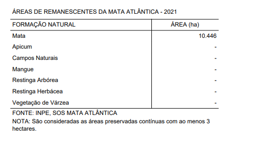
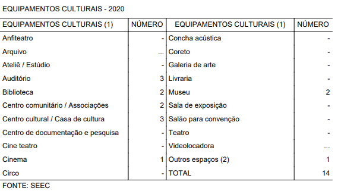
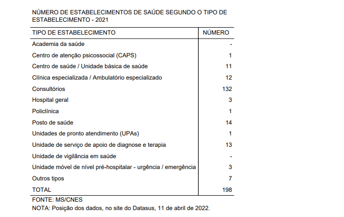

Irati, 115 anos de história e tradição
Conhecendo Irati: O que dizem as fontes?
-
Prefeitura de Irati
-
IBGE
-
IPARDES - Instituto Paranaense de Desenvolvimento Econômico e Social
Surgiu como a vila de "Covalzinho" que na década de 1890, quando os trilhos da Estrada de Ferro São Paulo/Rio Grande do Sul passaram pela vila, recebeu uma estação ferroviária chamada "Iraty", ponto chave para o seu desenvolvimento e que poteriormente seria nome da cidade. Em 15 de julho de 1907, já elevada a distrito, teve sua emancipação política decretada, desmembrando-se do município de Imbituva. O movimento foi liderado pelo Coronel Emílio Baptista Gomes, que veio a se tornar o primeiro prefeito do município. Os primeiros desbravadores chegaram por volta de 1829, eram eles, Pacífico de Souza Borges e Cipriano Francisco Ferraz, dois moradores que residiam onde hoje se denomina Teixeira Soares, levaram quinze dias para conhecer o lugar e então retornaram para casa. A região onde hoje é Irati, pertencia aos índios Caingangues, ramo dos tupis, daí a origem de seu nome Ira, que significa mel e, ty, rio, ou seja, rio de mel, que foi escolhido, por volta de 1829 e 1830. (Orreda, 1981).
Irati era a denominação de onde atualmente é a Vila São João, e a região central era chamada de Covalzinho. As primeiras famílias que residiam em Irati, depois Irati-Velho e hoje Vila São João, teriam vindo de Palmeira, Imbituva, Lapa, Itaicoca, Assungui (hoje Cerro Azul), Campo Largo e Curitiba, a partir de 1909 em diferentes períodos da imigração chegam a cidade diferentes levas de imigrantes holandeses, ucranianos, alemães, italianos e poloneses que se estabeleceram onde hoje é o bairro Itapará. Cada etnia é responsável por parte da cultura local e suas influências podem ser vistos na culinária, dança, arquitetura e artesanato, assim como características distintas na população. (Orreda, 1981)
Inicialmente a cidade era distrito de Imbituva, os moradores tinham que passar por caminhos difíceis para pode resolver situações judiciais e pagar impostos, em 1907 começa um movimento pela autonomia do distrito, conquistada no 2 de Abril do mesmo ano, sendo assim Irati emancipou-se de Imbituva em 1907 e foi instalada em 15 de julho. A primeira sede da Prefeitura foi inaugurada em 1907. O prédio, em madeira, localizado à Rua 15 de Julho, entre as ruas Alfredo Bufrem e Coronel Emílio Gomes, funcionou até os anos 20, o prefeito na época era Emílio Baptista Gomes. (Orreda, 1981).
Em 1927, na gestão do prefeito Zeferino Sales Bittencourt, foi inaugurado o prédio em alvenaria, na Rua Coronel Emílio Gomes, a edificação existe até hoje, e é utilizada pelo Corpo de Bombeiros de Irati. Atualmente, a sede da Prefeitura de Irati localiza-se em frente a antiga sede da Rua Coronel Emilio Gomes, e foi inaugurada em 1963 na gestão do prefeito Edgard Andrade Gomes. (Orreda, 1981).
Hino de Irati
Fonte: Site da prefeitura de Irati, disponível em: https://irati.pr.gov.br/pagina/1_Historia.html
Área Territorial: 999,517 km² [2021]
População estimada: 61.439 pessoas [2021]
Densidade demográfica: 56,23 hab/km² [2010]
Escolarização de 6 a 14 anos: 98,5% [2010]
IDHM (Índice de desenvolvimento humano municipal): 0,726 [2010]
Mortalidade infantil: 5,36 óbitos por mil nascidos vivos [2020]
Receitas realizadas: 163.562,38 R$(x1000) [2017]
Despesas empenhadas: 140.858,65 R$ (x1000) [2017]
PIB per capita: R$31.288,77 [2019]
Prefeito: JORGE DAVID DERBLI PINTO [2021]
Gentílico: iratiense
Altitude: 836 m
Latitude: 25º 28' 02''S
Longitude: 50º 39' 04''W
Trabalho e redimento: Em 2020, o salário médio mensal era de 2.1 salários mínimos. A proporção de pessoas ocupadas em relação à população total era de 23.0%. Na comparação com os outros municípios do estado, ocupava as posições 154 de 399 e 121 de 399, respectivamente. Já na comparação com cidades do país todo, ficava na posição 1571 de 5570 e 1036 de 5570, respectivamente. Considerando domicílios com rendimentos mensais de até meio salário mínimo por pessoa, tinha 32.6% da população nessas condições, o que o colocava na posição 223 de 399 dentre as cidades do estado e na posição 4142 de 5570 dentre as cidades do Brasil. (IBGE)
Saúde: A taxa de mortalidade infantil média na cidade é de 5.36 para 1.000 nascidos vivos. As internações devido a diarreias são de 0.6 para cada 1.000 habitantes. Comparado com todos os municípios do estado, fica nas posições 242 de 399 e 266 de 399, respectivamente. Quando comparado a cidades do Brasil todo, essas posições são de 3735 de 5570 e 3103 de 5570, respectivamente.(IBGE)
Território e Ambiente: Apresenta 73.6% de domicílios com esgotamento sanitário adequado, 78% de domicílios urbanos em vias públicas com arborização e 21.3% de domicílios urbanos em vias públicas com urbanização adequada (presença de bueiro, calçada, pavimentação e meio-fio). Quando comparado com os outros municípios do estado, fica na posição 48 de 399, 277 de 399 e 248 de 399, respectivamente. Já quando comparado a outras cidades do Brasil, sua posição é 1234 de 5570, 2560 de 5570 e 1755 de 5570, respectivamente. (IBGE)
Fonte: Site do IBGE, disponível em https://cidades.ibge.gov.br/brasil/pr/irati/panorama
 
Fonte: Site do IPARDES, disponível em https://www.ipardes.pr.gov.br/Pagina/Cadernos-municipais